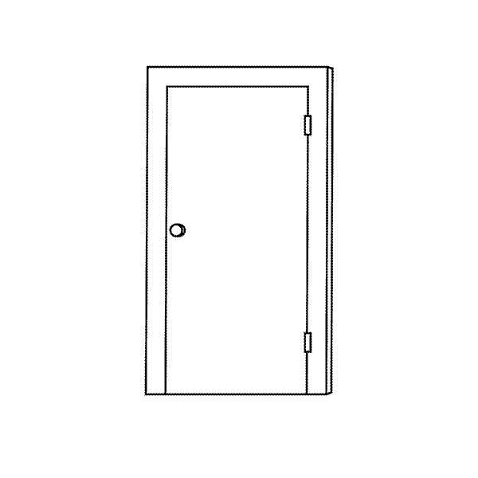

When thinking about the word itself “key”, I think of a solution a problem. Solution to a locked door, an in to an account. But what if there are things that are not meant to be solved or opened?
Close the door?
